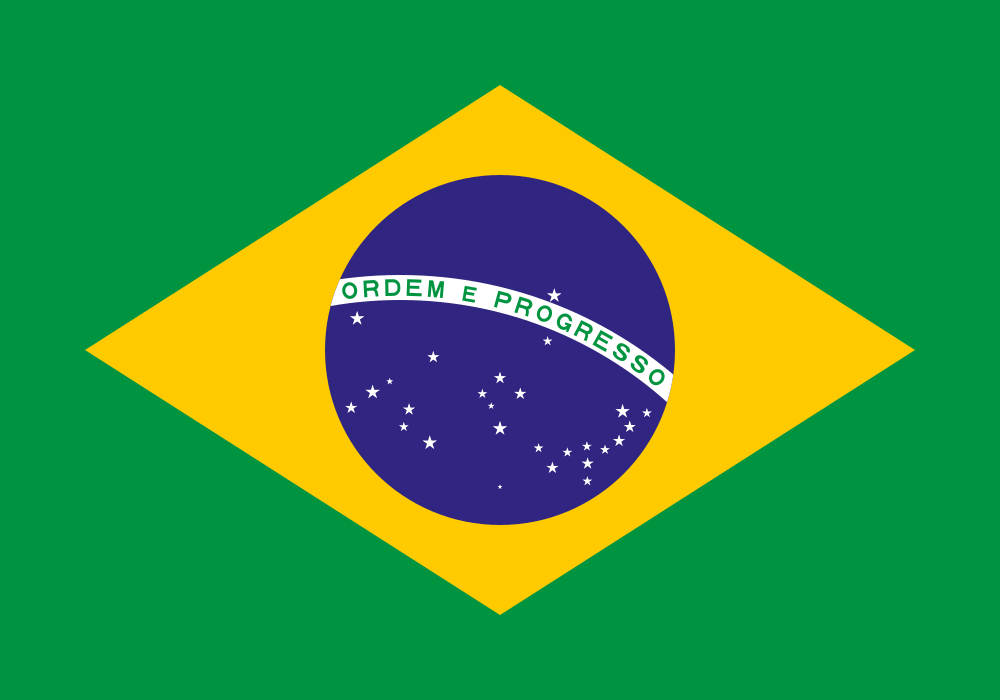

Yan Antunes Machado
Meu Perfil
Meu nome é Yan Antunes Machado. Nasci no Brasil e viovo com minha familia em Ribeirao Preto. Estou trabalhando como auxiliar administrativo em uma transportadora.

Ribeirao Preto

O Brasil é o maior país da América do Sule o quinto maior do mundo em área territorial. Banhado pelo Oceano Atlântico, o país abriga a maior biodiversidade do planeta, com destaque para a Floresta Amazônica. É reconhecido globalmente por sua rica pluralidade cultural, paixão pelo futebol, festividades como o Carnaval e por ser uma das principais potências econômicas e agrícolas do mundo.